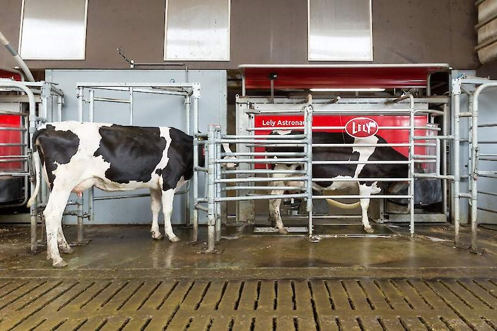

Over ons bedrijf
Sinds 2001 hebben wij een melkveebedrijf midden op de Hondsrug in het mooie Drenthe.
Wij melken gemiddeld over het jaar 65 koeien per dag. Alle melkkoeien die wij houden zijn hier ook geboren.
Zodra het weer het toelaat, lopen onze "dames" buiten in de wei. Ook hebben ze de vrijheid om de hele dag in en uit te lopen. Zo vindt de één het heerlijk om in een hete zomer lekker in de zon te bakken, terwijl de ander de koelte van de schuur op zoekt. Weer een ander vindt het heerlijk in de regen, terwijl de ander niet weet hoe snel ze binnen moet komen.
Ook krijgen ze zolang het gras groeit, vers gras op stal (stalvoeren). Verder voeren we naast het verse gras ingekuild gras, maïs en brokjes.
De melkrobot
In 2011 zijn we begonnen te melken met een A3 melkrobot van Lely. Met deze robot bieden wij de koeien optimale bewegingsvrijheid. Bij vrij koeverkeer bepalen de koeien zelf wanneer ze eten, drinken, rusten of worden gemolken. Ook kunnen ze tijdens het melken genieten van overheerlijke brokjes. Het draagt bij aan het natuurlijke ritme van de koeien. Een gezonde en stressvrije koe zorgt voor meer melk in de tank. Het belangrijkste vinden wij, dat het zeer dier(koe)vriendelijk is.
Verder heeft de robot een display die gebruiksvriendelijk is en zorgt voor een duidelijk overzicht van functies, instellingen, informatie en belangrijke rapporten. Automatisch melken heeft als voordeel dat je volledige controle over de veestapel hebt.

In het YouTube filmpje ziet u hoe een melkrobot werkt.